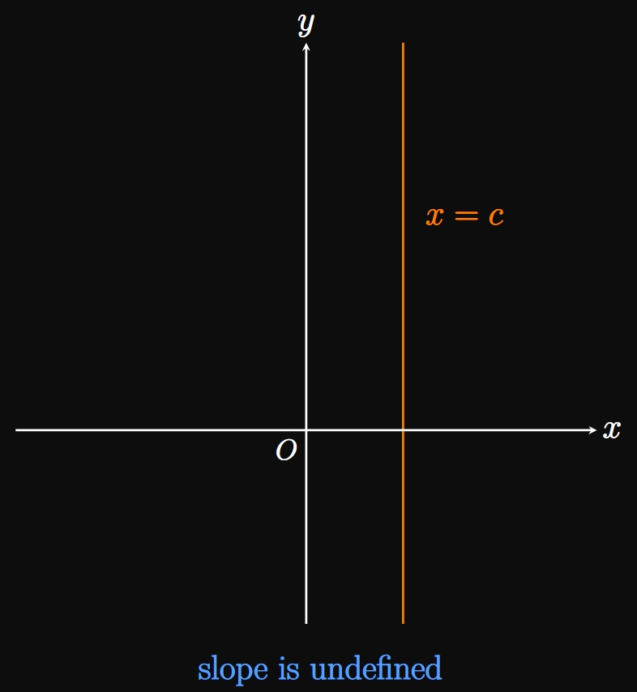
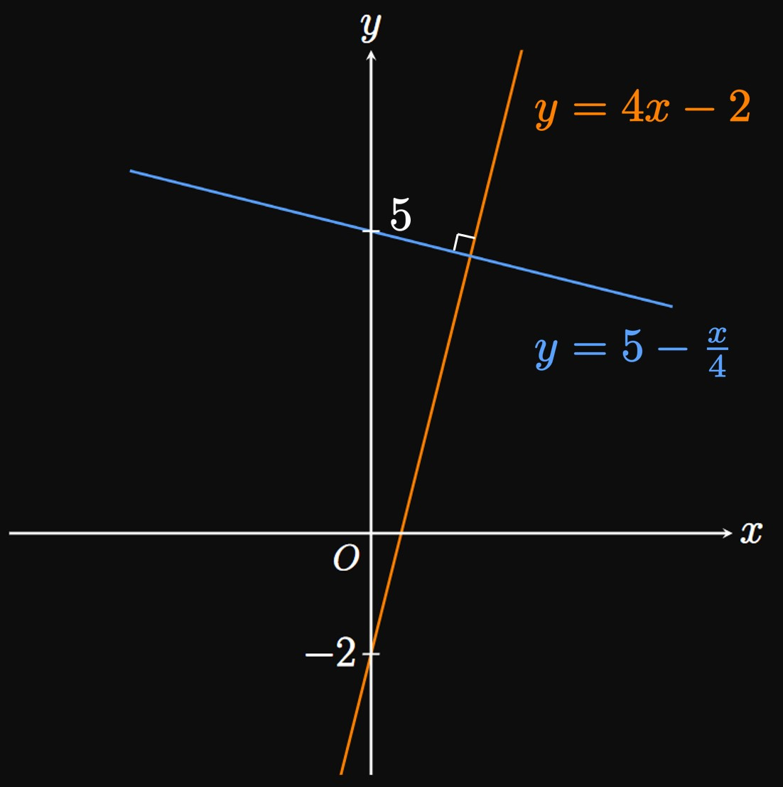

Lines and linear functions dominate many areas of math and physics.
Thus, understanding these topics is crucial to learn calculus.
From graphing lines to solving linear equations,
a calculus student needs a solid foundation in the following topics:
A linear function
can be written in the form
\begin{equation}
f(x) = mx + b \pd \label{eq:mx+b}
\end{equation}
All the combinations of points \((x, y)\)
that satisfy \(y = mx + b\) form the graph of \(y = f(x).\)
This graph is a line with constant rate of change \(m,\)
called the slope.
Observe that \(f(0) = b,\)
so \((0, b)\) is the \(y\)-intercept of the graph of \(f.\)
\(\eqrefer{eq:mx+b}\) is called the slope-intercept form
of a line, since the line's equation is given by its slope and \(y\)-intercept.
Figure 1 shows the graph of \(y = mx + b;\)
consider any two points \(P\) and \(Q\) on the line.
The slope of the line is given by dividing the change in \(y\) (denoted \(\Delta y\)) between \(P\) and \(Q\)
by the change in \(x\) (denoted \(\Delta x\)) between \(P\) and \(Q \col\)
\begin{equation}
m = \frac{\Delta y}{\Delta x} \pd \label{eq:m-frac}
\end{equation}
(The greek symbol \(\Delta\) is called delta;
it denotes the change in a quantity.)
Some people call \(\Delta y\) the rise and \(\Delta x\) the run;
then \(\eqref{eq:m-frac}\) is colloquially called the rise over run.
LINEAR FUNCTIONS
A linear function has a constant rate of change
and can be written in the form
\begin{equation}
f(x) = mx + b \cma \eqlabel{eq:mx+b}
\end{equation}
where \((0, b)\) is the graph's \(y\)-intercept and \(m\)
is the slope.
The slope is given by choosing two points on the line and calculating
\begin{equation}
m = \frac{\Delta y}{\Delta x} \pd \eqlabel{eq:m-frac}
\end{equation}
EXAMPLE 1
Find an equation of the line that passes through
the points \((-1, 5)\) and \((2, -1).\)
By \(\eqref{eq:m-frac},\) the line's slope is
\[
\ba
m &= \frac{\Delta y}{\Delta x} \nl
&= \frac{(-1) - 5}{2 - (-1)} \nl
&= -2 \pd
\ea
\]
Then \(\eqref{eq:mx+b}\) gives
the line's equation to be
\[y = -2x + b\]
for some unknown \(b.\)
To calculate \(b,\) we substitute the \(x\)- and \(y\)-coordinates
of any point on the line—for example,
\((2, -1) \col\)
\[
\ba
-1 &= -2(2) + b \nl
b &= 3 \pd
\ea
\]
So the equation of the line is
\[\boxed{y = -2x + 3}\]
(See Figure 2.)
EXAMPLE 2
Find the slope and \(y\)-intercept of the graph of
\[8x - 2y = 6 \pd\]
Let's manipulate this equation to be in slope-intercept form,
as in \(\eqref{eq:mx+b}.\)
In doing so, we solve for \(y \col\)
\[
\ba
8x - 2y &= 6 \nl
2y &= 8x - 6 \nl
y &= 4x - 3 \pd
\ea
\]
In slope-intercept form,
the slope is the number by which \(x\) is multiplied—that is, \(\boxed{m = 4}.\)
Accordingly, the \(y\)-intercept is \(\boxed{(0, -3)}.\)
Point-Slope Form
Suppose that a line of slope \(m\) passes through the points \(\par{x_0, y_0}\)
and \((x, y).\)
Then \(\eqref{eq:m-frac}\) gives
\[m = \frac{y - y_0}{x - x_0} \pd\]
Multiplying both sides by \(\par{x - x_0}\) gives
\begin{equation}
y - y_0 = m \par{x - x_0} \pd \label{eq:pt-slope}
\end{equation}
This equation is called the point-slope form of a line.
Thus, if you know a line's slope and a point on the line, then
using \(\eqref{eq:pt-slope}\) is a simpler alternative to manipulating \(\eqref{eq:mx+b}.\)
POINT-SLOPE FORM OF A LINE
If a line of slope \(m\) passes through a point \(\par{x_0, y_0},\)
then an equation of the line in point-slope form is
\begin{equation}
y - y_0 = m \par{x - x_0} \pd \eqlabel{eq:pt-slope}
\end{equation}
EXAMPLE 3
Determine an equation of the line that passes through the point
\((4, 2)\) with a slope of \(6.\)
Using point-slope form, as in \(\eqref{eq:pt-slope},\)
with \(\par{x_0, y_0}\) \(= (4, 2)\) and \(m = 6\) gives
\[y - 2 = 6(x - 4) \pd \]
Algebraic expansion yields
\[
y - 2 = 6x - 24
\or \boxed{y = 6x - 22}
\]
Horizontal and Vertical Lines
Let \(c\) be a constant.
Then a horizontal line is given by plotting \(y = c,\)
whose slope is \(0\) because \(\Delta y = 0\) for any two points on the line
(Figure 3A).
Conversely, a vertical line is the graph \(x = c;\)
its slope is undefined
(Figure 3B).

Parallel and Perpendicular Lines
Let's discuss key properties for comparing lines,
a fundamental concept applied in calculus.
Two lines are parallel if and only if their slopes are equal.
Conversely, two lines are perpendicular if and only if their
slopes are negative reciprocals of each other.
(For example, the reciprocal of \(3/5\) is \(5/3.\))
As an example, in Figure 4
lines \(A\) and \(B\) are parallel to each other because they
each have the same slope \(m;\)
line \(C\) has slope \(-1/m\) and is therefore perpendicular to lines \(A\) and \(B.\)
PARALLEL AND PERPENDICULAR LINES
Two lines are
parallel if and only if their slopes are equal.
perpendicular if and only if their slopes are negative reciprocals of each other.
EXAMPLE 4
Are the two lines \(y = 4x - 2\) and \(y = 5 - x/4\)
parallel, perpendicular, or neither?
The line \(y = 4x - 2\) has a slope of \(4,\)
while the line \(y = 5 - x/4\) has a slope of \(-1/4.\)
Since \(4\) and \(-1/4\) are negative reciprocals,
the two lines are perpendicular.
(See Figure 5.)

EXAMPLE 5
Write an equation of the line that is parallel to
the line \(y = 5x + 3\) and passes through the point \((2, 4).\)
The line \(y = 5x + 3\) has a slope of \(5.\)
So our objective is to find an equation of a line whose slope is also \(5\)
and that passes through \((2, 4).\)
The point-slope form of a line, as in \(\eqref{eq:pt-slope},\)
gives
\[y - 4 = 5(x - 2) \or \boxed{y = 5x - 6}\]
(See Figure 6.)
Systems of Linear Equations
In a system of linear equations,
our goal is to determine values for variables to satisfy multiple linear equations.
Generally, the first step is to reduce a system of multiple equations and unknown variables
into a single equation with only one unknown variable.
Let's walk through an example.
EXAMPLE 6
Find the solution to the following system of linear equations:
\begin{align}
y &= 2x + 6 \label{eq:ex-sub-1} \nl
6x - y &= 2 \pd \label{eq:ex-sub-2}
\end{align}
We want to express either equation in terms of only one variable.
Observe that \(\eqref{eq:ex-sub-1}\) expresses \(y\)
in terms of \(x.\)
Both equations are simultaneously true, so in \(\eqref{eq:ex-sub-2}\)
replacing \(y\) with \(2x + 6\) shows
\[
\ba
6x - (2x + 6) &= 2 \nl
4x - 6 &= 2 \nl
4x &= 8 \nl
x &= 2 \pd
\ea
\]
To solve for \(y,\) we substitute the solution \(x = 2\)
into either equation of the system—for example, into \(\eqref{eq:ex-sub-1} \col\)
\[y = 2(2) + 6 = 10 \pd\]
So the solution to the system is \(\boxed{(2, 10)}.\)
Graphically, this point is the intersection of the two lines \(y = 2x + 6\)
and \(6x - y = 2\)
(Figure 7).
In Example 6
we solved a system of two linear equations using the method of substitution,
in which we express one variable in terms of the other variable
and substitute this expression into the other equation.
The next example demonstrates solving by the method of elimination,
in which we add or subtract equations to cancel out a set of variables.
The method of elimination is best used when the variables
and constants are all vertically aligned.
EXAMPLE 7
Solve the following system of linear equations:
\[
\ba
2x + y &= 6 \nl
x - 3y &= -4 \pd
\ea
\]
Using the method of elimination,
we strive to merge both equations into a single equation
with only one unknown variable.
We multiply both sides of the second equation by \(2;\)
then the system becomes
\begin{align}
2x + y &= 6 \label{eq:ex-elim-1} \nl
2x - 6y &= -8 \label{eq:ex-elim-2} \pd
\end{align}
Since both equations contain \(2x,\)
subtracting \(\eqref{eq:ex-elim-2}\) from \(\eqref{eq:ex-elim-1}\) gives
\[
\ba
2x + y - (2x - 6y) &= 6 - (-8) \nl
7y &= 14 \nl
y &= 2 \pd
\ea
\]
To solve for \(x,\)
we substitute \(y = 2\)
into either equation of the system—for example, into \(\eqref{eq:ex-elim-1} \col\)
\[
\ba
2x + (2) &= 6 \nl
2x &= 4 \nl
x &= 2 \pd
\ea
\]
The solution to the system is therefore \(\boxed{(2, 2)}.\)
(See Figure 8.)
EXAMPLE 8
Solve the following system of linear equations:
\[
\ba
x + y &= 2 \nl
-5x - 5y &= 7 \pd
\ea
\]
Because the \(x\)'s,\(y\)'s, and constants are vertically aligned,
it is best to use the method of elimination.
Multiplying both sides of the first equation by \(5,\)
we attain the following system:
\begin{align}
5x + 5y &= 10 \label{eq:ex-elim-no-sol-1} \nl
-5x - 5y &= 7 \pd \label{eq:ex-elim-no-sol-2}
\end{align}
Adding \(\eqref{eq:ex-elim-no-sol-1}\) and \(\eqref{eq:ex-elim-no-sol-2}\) gives
\[
\ba
5x + 5y + \par{-5x - 5y} &= 10 + 7 \nl
0 &= 17 \pd
\ea
\]
Thus, this system has no solutions.
Graphically, the lines \(x + y = 2\)
and \(-5x - 5y = 7\) are parallel,
so they never intersect.
(See Figure 9.)
In the Exercises section,
you can work through a variety of application problems that require solving systems of linear equations.
Linear Functions
A linear function has a constant rate of change and can be written in the form
\begin{equation}
f(x) = mx + b \pd \eqlabel{eq:mx+b}
\end{equation}
All the points \((x, y)\)
that satisfy \(y = mx + b\) produce the graph of \(y = f(x)\)—a
line with constant rate of change \(m,\)
called the slope.
The \(y\)-intercept is \((0, b).\)
So \(\eqref{eq:mx+b}\) is called the slope-intercept form
of a line.
The slope is given by choosing two points on the line and calculating
\begin{equation}
m = \frac{\Delta y}{\Delta x} \pd \eqlabel{eq:m-frac}
\end{equation}
If a line of slope \(m\) passes through a point \(\par{x_0, y_0},\)
then an equation of the line in point-slope form is
\begin{equation}
y - y_0 = m \par{x - x_0} \pd \eqlabel{eq:pt-slope}
\end{equation}
If \(c\) is a constant, then a horizontal line is \(y = c\) and has a slope of \(0.\)
Conversely, a vertical line is \(x = c,\) whose slope is undefined.
perpendicular if and only if their slopes are negative reciprocals of each other.
Systems of Linear Equations
In a system of linear equations, we aim to calculate the values of variables
such that multiple linear equations are satisfied.
To solve such problems, we first reduce the system from multiple equations and unknowns
to a single equation of one unknown variable.
Doing so requires the methods of substitution
or elimination.
When solving a system of two linear equations by substitution,
we express one variable in terms of the other variable
and substitute this expression into the other equation.
But when solving a system of two linear equations by elimination,
we vertically align all the variables and constants;
then we add or subtract the equations to cancel out a set of variables.